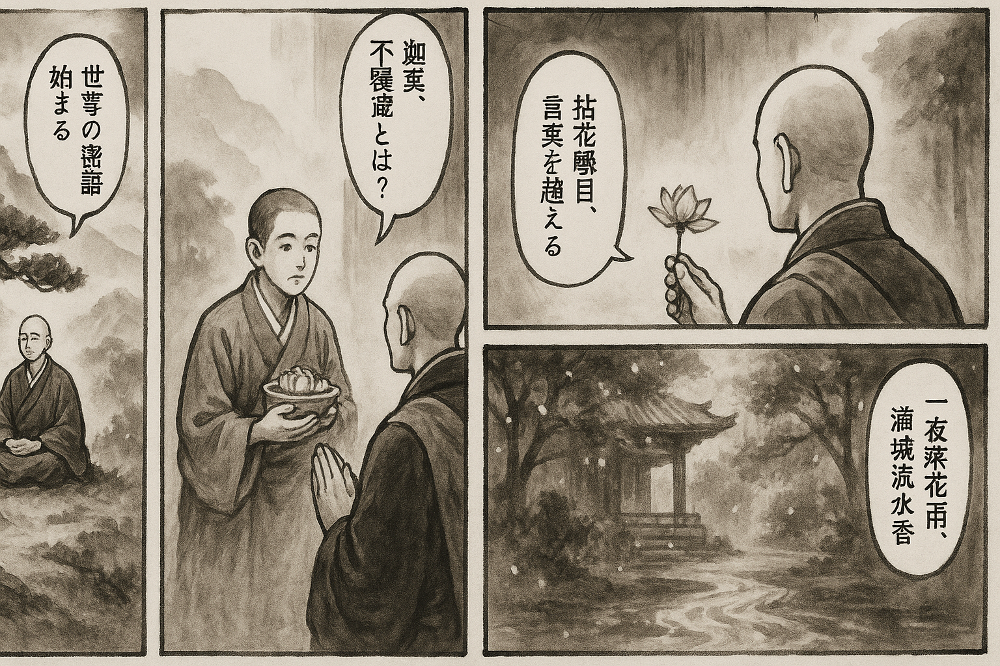

七十五巻 巻一覧
正法眼藏第45 密語
本ページは各巻の紹介ページです。tools/gen_web_volumes.py が doc/正法眼蔵.txt から要点の短い抜粋を載せています（全文の引用ではありません）。
出典（原文）: https://shomonji.or.jp/zazen/doc/genzou.html
原文・現代語訳の全文は 全文ページを参照してください。
この巻の紹介（概要）
道元『正法眼蔵』七十五巻の第45篇「密語」です。禅籍・経典への引用や語の行間が重なりやすいので、一度ですべてを要約に還元しない読み方を推奨します。問答 Bot では巻スコープにこの題名を含めると応答が安定しやすいことがあります。
語彙の足場
- 題名語：巻題「密語」は、道元が本章で特に扱う論点の看板です。辞書義だけに固定せず、原文中の用例で意味を確かめます。
- 引用と典故：公案・経文の引用は、一字一句の照応（何に答えているか）を押さえると全体が見えやすくなります。
- 学び方：抜粋だけでも音読し、分からない箇所は印を付けて後から問うとよいです。
原文（要点の抜粋）
当巻の冒頭付近からの短い抜粋です。長い引用は載せていません。全文は全文ページを参照してください。出典はリポジトリ内 doc/正法眼蔵.txt です。原文の参照元: https://shomonji.or.jp/zazen/doc/genzou.html
諸佛之所護念の大道を見成公案するに、汝亦如是、吾亦如是、善自護持、いまに證契せり。
雲居山弘覺大師、因官人送供問曰、世尊有密語有、迦葉不覆藏。如何是世尊密語（雲居山弘覺大師、因みに官人、供を送りて問うて曰く、世尊に密語有り、迦葉覆藏せずと。如何ならんか是れ世尊の密語）。
大師召云、尚書。
其人應諾（其の人應諾す）。
大師云、會麼（會すや）。
尚書曰、不會。
大師云、汝若不會世尊密語、汝若會迦葉不覆藏（汝若し不會なるは世尊の密語なり、汝若し會ならんは迦葉不覆藏なり）。
大師者、靑原五世の嫡孫と現成して、天人師なり、盡十方界の大善知識なり。有情を化し、無情を化す。四十六佛の佛嫡として、佛祖のために説法す。三峰庵主の住裏には、天廚送供す。傳法得道のときより、送供の境界を超越せり。
いまの道取する世尊有密語、迦葉不覆藏は、四十六佛の相承といへども、四十六代の本來面目として、匪從人得なり、不從外來なり。不是本得なり、未嘗新條なり。この一段事の密語の現成なる、ただ釋迦牟尼世尊のみ密語あるにあらず、諸佛祖みな密語あり。すでに世尊なるは、かならず密語あり。密語あれば、さだめて迦葉不覆藏あり。百千の世尊あれば百千の迦葉ある道理を、わすれず參學すべきなり。參學すといふは、一時會取せんとおもはず、百廻千廻も審細功夫して、かたきものをきらんと經營するがごとくすべし。かたる人あらば、たちどころに會取すべしとおもふべからず。いま雲居山すでに世尊ならんに密語そなはり、不覆藏の迦葉あり。喚尚書、書應諾は、すなはち密語なりと參學することなかれ。
大師ちなみに尚書にしめすにいはく、汝若不會、世尊密語、汝若會、迦葉不覆藏。いまの道取、かならず多劫の辨道功夫を立志すべし。
なんぢもし不會なるは世尊の密語なりといふ、いまの茫然とあるを不會といふにあらず、不知を不會といふにあらず。なんじもし不會といふ道理、しづかに參學すべき處分を聽許するなり。功夫辨道すべし。さらにまた、なんぢもし會ならんはと道取する、いますでに會なるとにはあらず。
佛法を參學するに多途あり。そのなかに、佛法を會し、佛法を不會する關棙子あり。正師をみざれば、ありとだにもしらず、いたづらに絶見聞の眼處耳處におほせて、密語ありと亂會せり。なんぢもし會なるゆゑに迦葉不覆藏なるといふにあらず、不會の不覆藏もあるなり。不覆藏はたれ人も見聞すべしと學すべからず。すでにこれ不覆藏なり、無處不覆藏ならん正恁麼時、こころみに參究すべし。
図解（4コマ・AI生成）
教義の根拠は原文・出典に従い、漫画は比喩の補助に留めてください。

深掘り（読解のコツ）
- 道元文は定義の羅列に見えても、多くの場合誤解への遮断と正伝の姿勢が背骨になっています。
- 「当体」「現成」「即」などの語が出たら、その巻独自の差別相にどう接続しているかをメモしておくとよいです。